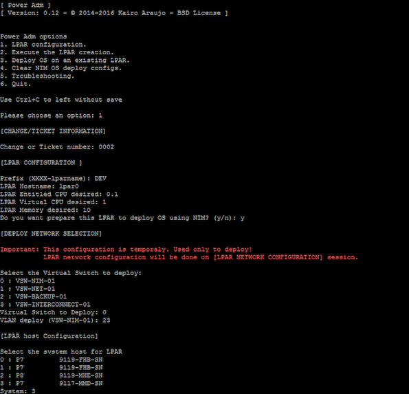
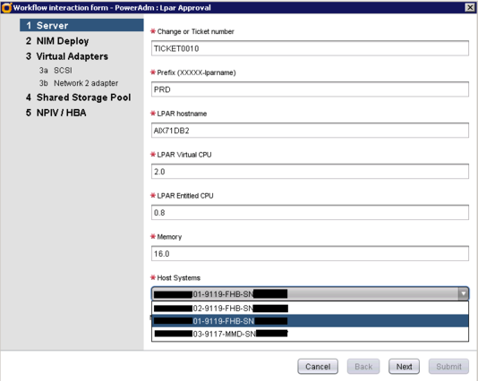

Last modified on 10 October 2016 at 21:03 (See sources)
This page style is based on http://txt2tags.org page =)
PowerAdm is a free (BSD License) tool to administrate IBM Power Logical Partition (LPAR) creation, operational system deploy and basics PowerVM (VIOS) troubleshooting.
PowerAdm there is integration with VMware vCenter Ochestrator (vCO), that can be used as a request portal (Cloud) or integrated with another process management tool by HTTP REST.
PowerAdm uses a single configuration file and works directly with Hardware Management Console (HMC). Easy to setup and to uses.
| Text Interface | Running on VMware vCenter Orchestator |
|  |  |
Whoever manages an IBM Power environment through the Hardware Management Console (HMC) knows that it is an easy management interface to create LPARs but we can not say the same when talking about managing the devices IDs, such as virtual network, virtual fiber channel, virtual scsi, etc or managing information about the maximum and minimum memory and CPUs, physical devices, capped, uncapped, and so on.
The objective of this tool is to adopt a standard for IDs based on the LPAR ID and also to facilitate the LPAR creation with no need of expert knowledge, making it easier even for analysts without experienced skills in Power or operators.
Power Adm is a free and simple tool developed in Python to create LPARs easily, quickly and with their standards.
Something that we really consider the differential in this tool is the IDs organization.
In beta testing:
It's developed using Python and uses some Shell Scripting. I'm a sysadmin not a developer so sorry if it is not looking great. Your help is important and kindly accept to improve the tool.
If you don't have an HMC and a Power to run tests, don't worry. I've an some code with simulation on createlparconf.py, newid.py. Directory simulation is available upon request.
This software is BSD License. Please more details in LICENSE file.
IMPORTANT: IBM, PowerVM (a.k.a. VIOS), smitty are registered trademarks of IBM Corporation in the United States, other countries, or both.
VMware, vCenter, vCenter Orchestrator are registered trademarks of VMware Inc in the United States, other countries, or both.
This project is maintained by Kairo Araujo
Contributors: Bruno Costa, Fernando Costa, Raphael Paiva and Filipi Silva
Last modified on 10 October 2016 at 21:03 (See sources)
This page style is based on http://txt2tags.org page =)